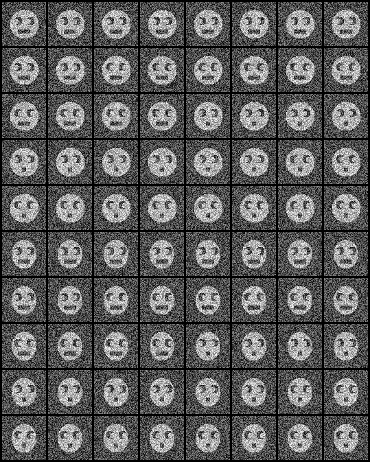

(Truncated)

| .OPERATION: | CA SMI | ; Set Active/Inactive Images Coordinates |
| .CORAN/PCA FILE PREFIX: | cas_c | ; File prefix (input) |
| .ACTIVE IMAGE FILE TEMPLATE: | sav_face_stk@* | ; Images (input) |
| .FILE NUMBERS OR SELECTION DOC FILE NAME: | 1-60 | ; Image used |
| .INACTIVE IMAGE FILE TEMPLATE: | sav_face_stk@* | ; Images (input) |
| .FILE NUMBERS OR SELECTION DOC FILE NAME: | 61-80 | ; Images not used |
| .COORDINATE OUTPUT FILE PREFIX: | casmi_60 | ; File template (output) |
| INPUT TEXT FILE (Truncated) |
|---|
| |
| cas_c_IMC |
| ACTIVE and INACTIVE INPUT IMAGES |
|---|
|  |
| face_mon |
| OUTPUT COORDINATE TEXT FILE |
|---|
| casmi_60_IMC |